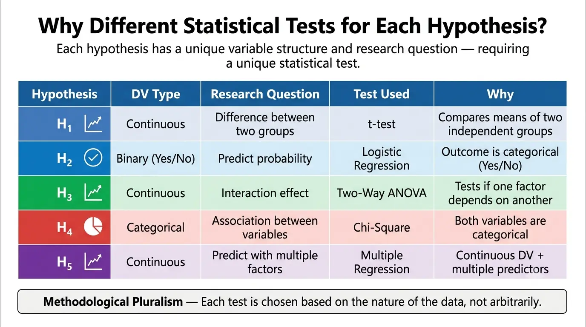

1. Identify Research Gap
2. Formulate Objectives
3. Construct Hypotheses
4. Mixed-Methods Testing
(SPSS/NVivo)
5. Synthesize Outcomes & Policy
Single-state analysis
No comparative study evaluating CSR communication between CG and JH
Corporate-centric
Lack of beneficiary-centric primary data and perception metrics
Urban communication models
Theories remain untested in rural/tribal industrial belts
Financial expenditure focus
Communication as independent variable ignored
Manufacturing/Mining focus
Banking sector CSR communication largely ignored
To compare the effectiveness of CSR communication strategies between companies operating in Chhattisgarh and Jharkhand.
To assess the role of CSR communication in the educational development of beneficiaries.
To evaluate the influence of CSR communication on healthcare access and awareness.
To examine the contribution of CSR communication in promoting environmental conservation.
To analyse the role of CSR communication in enhancing livelihood opportunities.
There is a significant difference in the Communication Effectiveness Score (CES) between Chhattisgarh and Jharkhand.
Tested via Independent t-testEffective CSR communication significantly increases the likelihood of perceived educational improvement.
Tested via Logistic RegressionThere is a significant interaction effect between state geography and communication channels on healthcare perception.
Tested via Two-Way ANOVAThere is a significant association between the type of communication channel used and environmental impact recognition.
Tested via Chi-SquareCommunication Effectiveness is a stronger predictor of perceived livelihood enhancement than geographical state.
Tested via Multiple Linear Regression| H. No. | Independent Variable(s) | Dependent Variable | Statistical Test |
|---|---|---|---|
| H₁ | State (CG vs JH) | Communication Effectiveness Score (CES) | Independent Samples t-test |
| H₂ | CES (Continuous) | Educational Improvement (Binary: Yes/No) | Binary Logistic Regression |
| H₃ | State & Communication Channel | Healthcare Perception Score | Two-Way ANOVA |
| H₄ | Communication Channel | Environmental Recognition (Categorical) | Chi-Square Test of Independence |
| H₅ | CES & State | Livelihood Enhancement Score | Multiple Linear Regression |
Compares CES means between CG and JH (H₁)
Predicts binary educational outcomes based on CES (H₂)
Tests interaction between state and channel on health (H₃)
Tests association between channels and environment (H₄)
Predicts continuous livelihood score using CES and State (H₅)
Validation of the integrated framework.
Empirical proof that communication drives CSR success.
Adaptation of PR models to tribal/rural demographics.
Expansion of dialogue models in developing regions.
Policy updates for the Ministry of Corporate Affairs.
Guidelines for inclusive CSR reporting.
Implementation guides for NGOs and foundations.
Standardized tools for CSR assessment.
